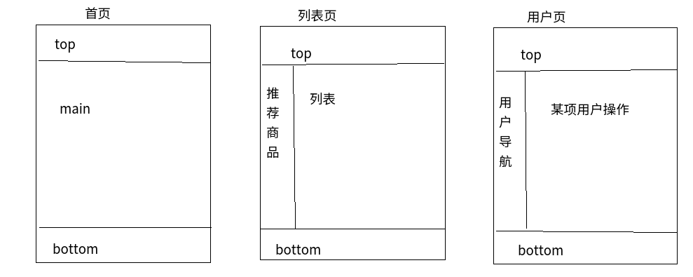

模板继承
- 模板继承可以减少页面内容的重复定义，实现页面内容的重用
- 典型应用：网站的头部、尾部是一样的，这些内容可以定义在父模板中，子模板不需要重复定义
- block标签：在父模板中预留区域，在子模板中填充
- extends继承：继承，写在模板文件的第一行
- 定义父模板base.html
{ %block block_name%}
这里可以定义默认值
如果不定义默认值，则表示空字符串
{ %endblock%}
- 定义子模板index.html
{ % extends "base.html" %}
- 在子模板中使用block填充预留区域
{ %block block_name%}
实际填充内容
{ %endblock%}
说明
- 如果在模版中使用extends标签，它必须是模版中的第一个标签
- 不能在一个模版中定义多个相同名字的block标签
- 子模版不必定义全部父模版中的blocks，如果子模版没有定义block，则使用了父模版中的默认值
- 如果发现在模板中大量的复制内容，那就应该把内容移动到父模板中
- 使用可以获取父模板中block的内容
- 为了更好的可读性，可以给endblock标签一个名字
{ % block block_name %}
区域内容
{ % endblock block_name %}
三层继承结构
- 三层继承结构使代码得到最大程度的复用，并且使得添加内容更加简单
- 如下图为常见的电商页面

1.创建根级模板
- 名称为“base.html”
- 存放整个站点共用的内容
<!DOCTYPE html>
<html>
<head>
<title>{%block title%}{%endblock%} 水果超市</title>
</head>
<body>
top--{{logo}}
<hr/>
{%block left%}{%endblock%}
{%block content%}{%endblock%}
<hr/>
bottom
</body>
</html>
2.创建分支模版
- 继承自base.html
- 名为“base_*.html”
- 定义特定分支共用的内容
- 定义base_goods.html
{%extends 'temtest/base.html'%}
{%block title%}商品{%endblock%}
{%block left%}
<h1>goods left</h1>
{%endblock%}
- 定义base_user.html
{%extends 'temtest/base.html'%}
{%block title%}用户中心{%endblock%}
{%block left%}
<font color='blue'>user left</font>
{%endblock%}
- 定义index.html，继承自base.html，不需要写left块
{%extends 'temtest/base.html'%}
{%block content%}
首页内容
{%endblock content%}
3.为具体页面创建模板，继承自分支模板
- 定义商品列表页goodslist.html
{%extends 'temtest/base_goods.html'%}
{%block content%}
商品正文列表
{%endblock content%}
- 定义用户密码页userpwd.html
{%extends 'temtest/base_user.html'%}
{%block content%}
用户密码修改
{%endblock content%}
4.视图调用具体页面，并传递模板中需要的数据
- 首页视图index
logo='welcome to itcast'
def index(request):
return render(request, 'temtest/index.html', {'logo': logo})
- 商品列表视图goodslist
def goodslist(request):
return render(request, 'temtest/goodslist.html', {'logo': logo})
- 用户密码视图userpwd
def userpwd(request):
return render(request, 'temtest/userpwd.html', {'logo': logo})
5.配置url
from django.conf.urls import url
from . import views
urlpatterns = [
url(r'^$', views.index, name='index'),
url(r'^list/$', views.goodslist, name='list'),
url(r'^pwd/$', views.userpwd, name='pwd'),
]